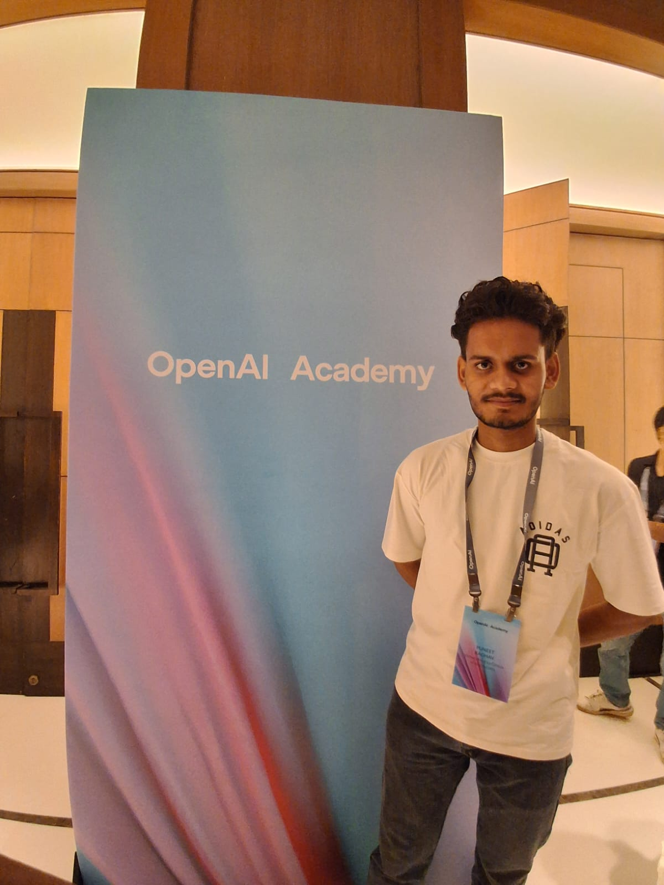
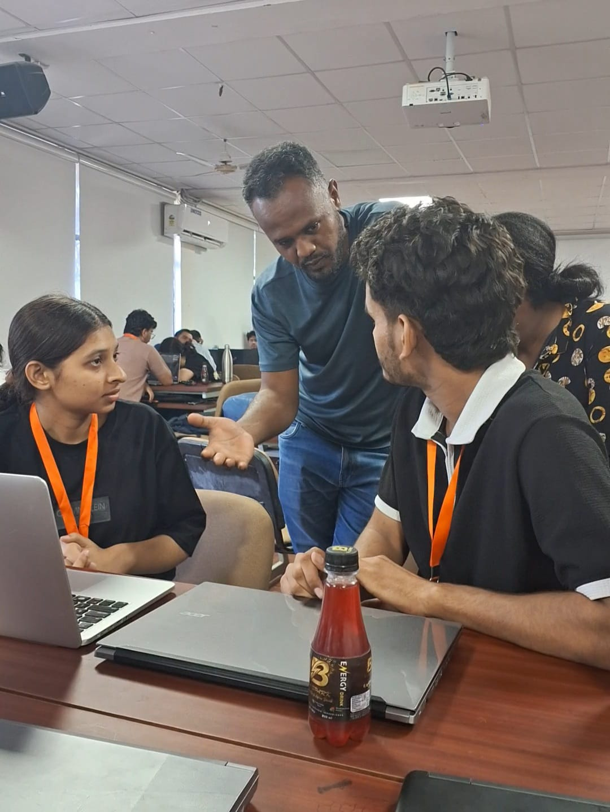
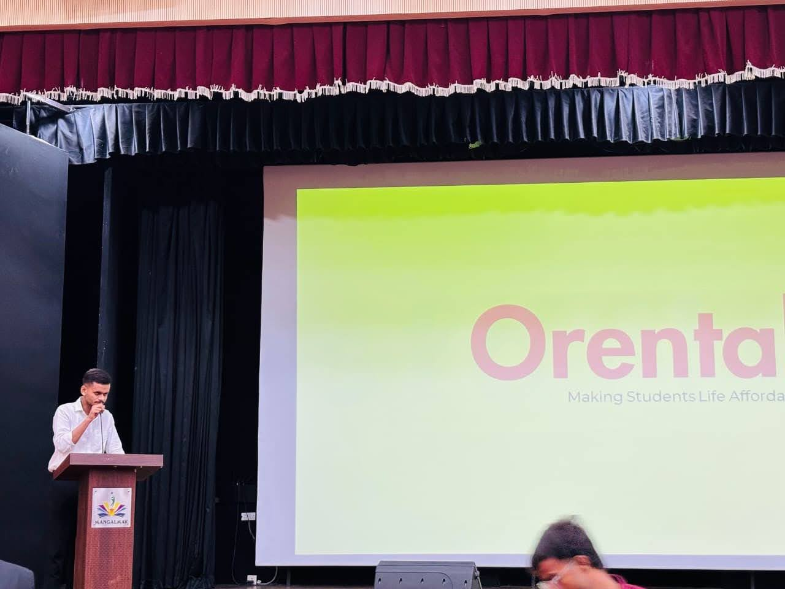
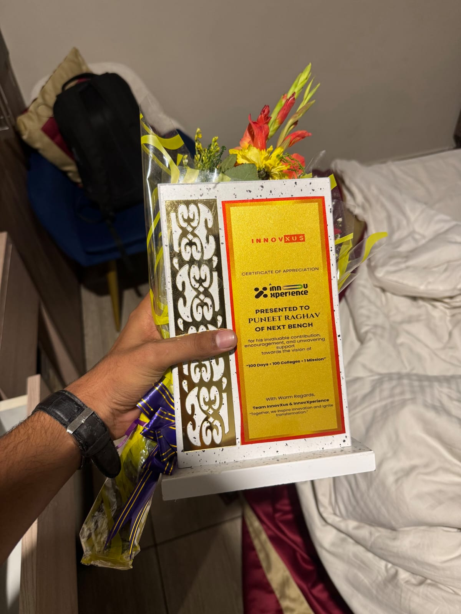
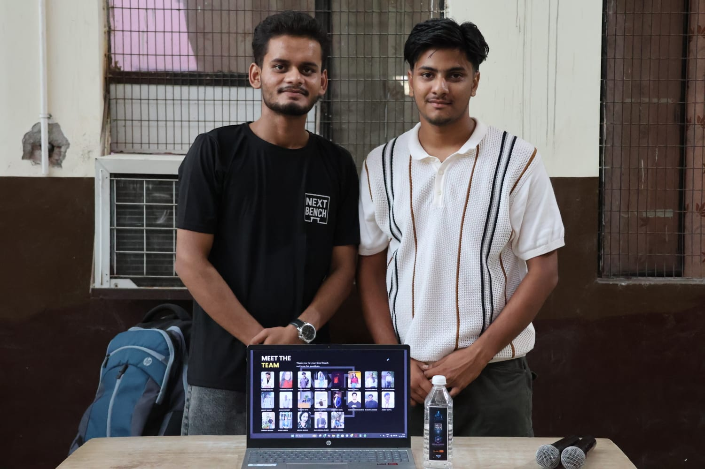
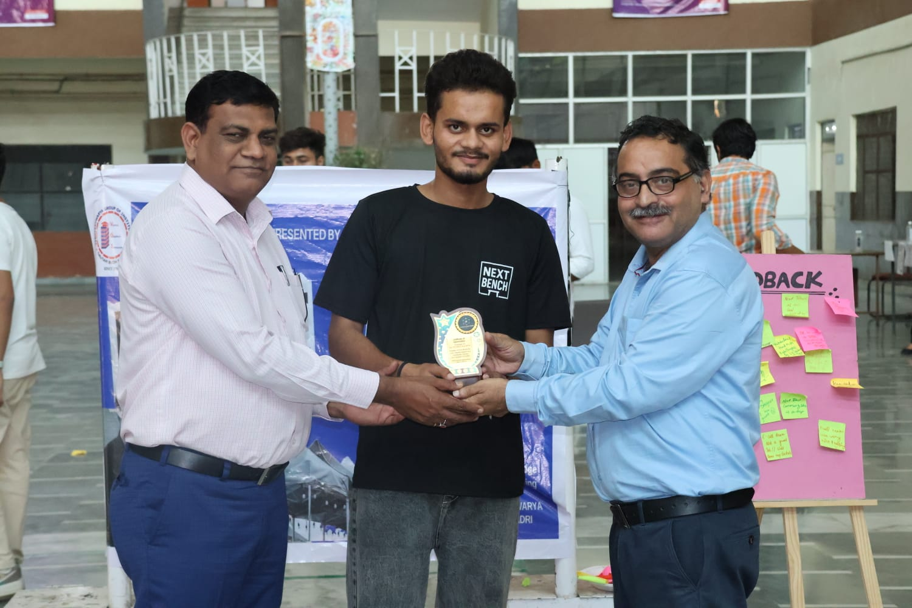
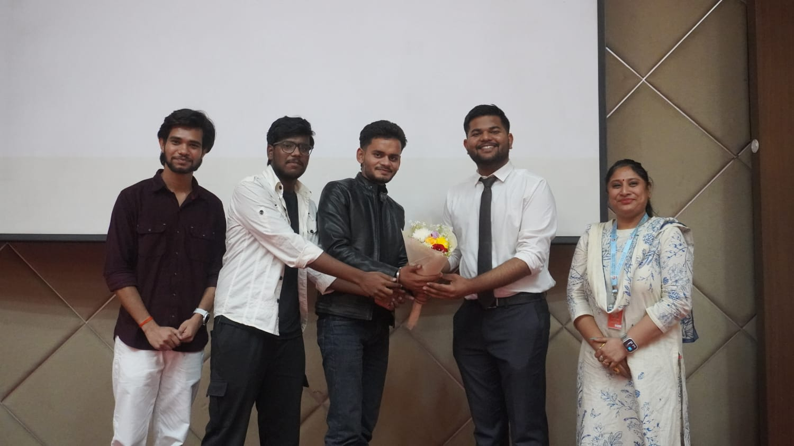

Work


AI Engineer
Building intelligent AI systems that solve real-world problems with scalability, reliability, and impact.
I'm Puneet Raghav, a final-year B.Tech Computer Science & Engineering student specializing in Artificial Intelligence and Machine Learning. I am passionate about designing and building intelligent, scalable, and production-ready AI solutions that solve real-world business problems.
My expertise spans Machine Learning, Deep Learning, Natural Language Processing (NLP), Generative AI, MLOps, and Data Engineering. I enjoy working across the complete AI development lifecycle—from data collection and preprocessing to model training, evaluation, deployment, monitoring, and continuous improvement. I have hands-on experience with Python, SQL, Scikit-learn, TensorFlow, PyTorch, FastAPI, Docker, Git, DVC, and modern AI development workflows.
I believe that great AI products are built by combining strong engineering principles with a deep understanding of user needs. Rather than simply building models, I focus on creating reliable, maintainable, and impactful AI systems that deliver measurable value.
I am currently seeking opportunities to collaborate on challenging AI projects, contribute to innovative teams, and grow as an AI Engineer while creating technology that makes a meaningful impact.
As a UI/UX Designer Intern at Aether AI, I collaborated with the development team to design intuitive, user-centric, and visually engaging mobile application interfaces. I gained hands-on experience in the complete UI/UX design process, from understanding user requirements to creating interactive prototypes and supporting implementation.
Skills Strengthened: UI/UX Design, Wireframing, Prototyping, User Research, Design Systems, Collaboration, and Problem Solving within a fast-paced environment.

Attendee – OpenAI Academy: Future Skills for India Launch

HackIndia 2025

Campus Tycoon 2.0 – 2nd Prize

Organizer – InnovXperience 2025

Startup Exhibitor & Community Partner – MiniVerse Expo 2025

Community Partner – MiniVerse Expo

Organizer – COMMIT 2025

OpenAI Academy Opening Ceremony
Click on any image to see the story
I'm currently looking for new opportunities, collaborative projects, or discussions around AI infrastructure and automation. Whether you have a question or just want to connect, I'll try my best to get back to you!
Say Hello